Lecciones de circuitos eléctricos - Volumen III
Capítulo 7
TIRISTORES
- Hysteresis
- Gas discharge tubes
- The Shockley Diode
- The DIAC
- The Silicon-Controlled Rectifier (SCR)
- The TRIAC
- Optothyristors
- The Unijunction Transistor (UJT)
- The Silicon-Controlled Switch (SCS)
- Field-effect-controlled thyristors
- Bibliography
Hysteresis
Los tiristores son una clase de componentes semiconductores que exhibenhistéresis, esa propiedad por la cual un sistema no regresa a su estado original después de que se haya eliminado alguna causa del cambio de estado. Un ejemplo muy simple de histéresis es la acción mecánica de un interruptor de palanca: cuando se empuja la palanca, gira a uno de dos estados (posiciones) extremos y permanecerá allí incluso después de que se elimine la fuente de movimiento (después de retirar la mano de la palanca del interruptor). Para ilustrar la ausencia de histéresis, considere la acción de un interruptor de botón "momentáneo", que vuelve a su estado original después de que ya no se presiona el botón: cuando se retira el estímulo (su mano), el sistema (interruptor) regresa inmediata y completamente a su estado anterior sin ningún comportamiento de "enganche".
Los transistores bipolares, de efecto de campo de unión y de efecto de campo de puerta aislada son dispositivos no histéricos. Es decir, estos no se "enganchan" inherentemente a un estado después de ser estimulados por una señal de voltaje o corriente. Para cualquier señal de entrada dada en cualquier momento dado, un transistor exhibirá una respuesta de salida predecible según lo definido por su curva característica. Los tiristores, por otro lado, son dispositivos semiconductores que tienden a permanecer "encendidos" una vez encendidos y tienden a permanecer "apagados" una vez apagados. Un evento momentáneo puede cambiar estos dispositivos a su estado encendido o apagado, donde permanecerán así por sí solos, incluso después de que se elimine la causa del cambio de estado. Como tales, sólo son útiles como dispositivos de conmutación de encendido/apagado (muy parecidos a un interruptor de palanca) y no pueden usarse como amplificadores de señal analógica.
Los tiristores se construyen utilizando la misma tecnología que los transistores de unión bipolar y, de hecho, pueden analizarse como circuitos compuestos por pares de transistores. Entonces, ¿cómo se puede fabricar un dispositivo histérico (un tiristor) a partir de dispositivos no histéricos (transistores)? La respuesta a esta pregunta escomentarios positivos, también conocido comoretroalimentación regenerativa. Como recordará, la retroalimentación es la condición en la que un porcentaje de la señal de salida se "realimenta" a la entrada de un dispositivo amplificador. La retroalimentación negativa o degenerativa da como resultado una disminución de la ganancia de voltaje con aumentos en la estabilidad, la linealidad y el ancho de banda. La retroalimentación positiva, por otro lado, da como resultado una especie de inestabilidad en la que la salida del amplificador tiende a "saturarse". En el caso de los tiristores, esta tendencia a saturarse equivale a que el dispositivo "quiere" permanecer encendido una vez encendido y apagado una vez apagado.
En este capítulo exploraremos varios tipos diferentes de tiristores, la mayoría de los cuales provienen de un circuito central único y básico de dos transistores. Pero antes de hacerlo, sería beneficioso estudiar el predecesor tecnológico de los tiristores: los tubos de descarga de gas.
Gas discharge tubes
Si alguna vez ha presenciado una tormenta eléctrica, habrá visto la histéresis eléctrica en acción (y probablemente no se haya dado cuenta de lo que estaba viendo). La acción del fuerte viento y la lluvia acumula tremendas cargas eléctricas estáticas entre las nubes y la tierra, y también entre las nubes. Los desequilibrios de carga eléctrica se manifiestan como altos voltajes, y cuando la resistencia eléctrica del aire ya no puede mantener a raya estos altos voltajes, enormes oleadas de corriente viajan entre los polos opuestos de carga eléctrica, lo que llamamos "relámpagos".
La acumulación de altos voltajes por el viento y la lluvia es un proceso bastante continuo, y la tasa de acumulación de carga aumenta en las condiciones atmosféricas adecuadas. Sin embargo, los rayos son todo menos continuos: existen como oleadas relativamente breves en lugar de descargas continuas. ¿Por qué es esto? ¿Por qué no vemos relámpagos suaves y brillantes?arcosen lugar de relámpagos violentamente brevespernos? La respuesta está en la resistencia no lineal (e histérica) del aire.
En condiciones normales, el aire tiene una resistencia extremadamente alta. De hecho, es tan alto que normalmente consideramos su resistencia como infinita y la conducción eléctrica a través del aire como insignificante. La presencia de agua y polvo en el aire reduce un poco su resistencia, pero sigue siendo un aislante para la mayoría de los fines prácticos. Sin embargo, cuando se aplica un voltaje suficientemente alto a través de una distancia de aire, sus propiedades eléctricas cambian: los electrones quedan "despojados" de sus posiciones normales alrededor de sus respectivos átomos y se liberan para constituir una corriente. En este estado, se considera que el aireionizadoy se llama unplasmaen lugar de ungas. Este uso de la palabra "plasma" no debe confundirse con el término médico (que significa la porción líquida de la sangre), sino que es un cuarto estado de la materia, siendo los otros tres sólido, líquido y vapor (gas). El plasma es un conductor relativamente bueno de la electricidad, siendo su resistencia específica mucho menor que la de la misma sustancia en estado gaseoso.
A medida que una corriente eléctrica se mueve a través del plasma, se disipa energía en el plasma en forma de calor, del mismo modo que la corriente a través de una resistencia sólida disipa energía en forma de calor. En el caso de los rayos, las temperaturas implicadas son extremadamente altas. Las altas temperaturas también son suficientes para convertir el aire gaseoso en plasma o mantener el plasma en ese estado sin la presencia de alto voltaje. A medida que el voltaje entre nube y tierra, o entre nube y nube, disminuye a medida que la corriente del rayo neutraliza el desequilibrio de carga, el calor disipado por el rayo mantiene la trayectoria del aire en un estado de plasma, manteniendo baja su resistencia. El rayo permanece como plasma hasta que el voltaje disminuye a un nivel demasiado bajo para sostener suficiente corriente para disipar suficiente calor. Finalmente, el aire vuelve a un estado gaseoso y deja de conducir corriente, permitiendo así que el voltaje se acumule una vez más.
Observe cómo a lo largo de este ciclo, el aire presenta histéresis. Cuando no conduce electricidad, tiende aseguir siendo un aislantehasta que el voltaje se acumula más allá de un punto umbral crítico. Luego, una vez que cambia de estado y se convierte en plasma, tiende asigue siendo un conductorhasta que el voltaje caiga por debajo de un punto umbral crítico inferior. Una vez "encendido", tiende a permanecer "encendido" y una vez "apagado", tiende a permanecer "apagado". Esta histéresis, combinada con una acumulación constante de voltaje debido a los efectos electrostáticos del viento y la lluvia, explica la acción de los rayos como breves ráfagas.
En términos electrónicos, lo que tenemos aquí en la acción del rayo es una simpleoscilador de relajación. Los osciladores son circuitos electrónicos que producen un voltaje oscilante (CA) a partir de un suministro constante de energía CC. Un oscilador de relajación es aquel que funciona según el principio de un condensador de carga que se descarga repentinamente cada vez que su voltaje alcanza un valor umbral crítico. Uno de los osciladores de relajación más simples que existen se compone de tres componentes (sin contar la fuente de alimentación de CC): una resistencia, un condensador y una lámpara de neón en la Figura below.
{kind=link}
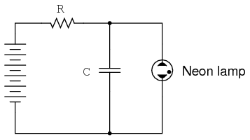
Oscilador de relajación simple
Las lámparas de neón no son más que dos electrodos metálicos dentro de una bombilla de vidrio sellada, separados por el gas neón del interior. A temperatura ambiente y sin voltaje aplicado, la lámpara tiene una resistencia casi infinita. Sin embargo, una vez que se excede un cierto umbral de voltaje (este voltaje depende de la presión del gas y la geometría de la lámpara), el gas de neón se ionizará (se convertirá en plasma) y su resistencia se reducirá drásticamente. En efecto, la lámpara de neón presenta las mismas características que el aire en una tormenta eléctrica, con la emisión de luz como resultado de la descarga, aunque en una escala mucho menor.
El condensador en el circuito oscilador de relajación que se muestra arriba se carga a una velocidad exponencial inversa determinada por el tamaño de la resistencia. Cuando su voltaje alcanza el voltaje umbral de la lámpara, la lámpara se "enciende" repentinamente y descarga rápidamente el capacitor a un valor de voltaje bajo. Una vez descargada, la lámpara se "apaga" y permite que el condensador acumule carga una vez más. El resultado es una serie de breves destellos de luz de la lámpara, cuya velocidad está dictada por el voltaje de la batería, la resistencia de la resistencia, la capacitancia del capacitor y el voltaje umbral de la lámpara.
Si bien las lámparas de descarga de gas se utilizan más comúnmente como fuentes de iluminación, sus propiedades histéricas se aprovecharon en variantes un poco más sofisticadas conocidas comotubos de tiratrón. Esencialmente un tubo triodo lleno de gas (un triodo es un tubo de electrones de vacío de tres elementos que realiza una función muy similar al canal N, IGFET tipo D), el tubo tiratrón podría encenderse con un pequeño voltaje de control aplicado entre la rejilla y el cátodo, y apagarse reduciendo el voltaje de placa a cátodo.

Circuito de control de tiratrón simple
En esencia, los tubos de tiratrón eranrevisadoVersiones de lámparas de neón construidas específicamente para conmutar corriente a una carga. El punto dentro del círculo del símbolo esquemático indica un llenado de gas, a diferencia del fuerte vacío que normalmente se ve en otros diseños de tubos de electrones. En el circuito que se muestra arriba en la Figura above. El tubo tiratrón permite que la corriente pase a través de la carga en una dirección (tenga en cuenta la polaridad a través de la resistencia de carga) cuando se activa mediante el pequeño voltaje de control de CC conectado entre la rejilla y el cátodo. Tenga en cuenta que la fuente de alimentación de la carga es CA, lo que proporciona una pista sobre cómo se apaga el tiratrón después de haber sido activado: dado que el voltaje de CA pasa periódicamente por una condición de 0 voltios entre semiciclos, la corriente a través de una carga alimentada por CA también debe detenerse periódicamente. Esta breve pausa de la corriente entre medios ciclos le da tiempo al gas del tubo para que se enfríe, permitiéndole volver a su estado normal de "apagado". La conducción puede reanudarse solo si la fuente de alimentación de CA aplica suficiente voltaje (en algún otro momento del ciclo de la onda)andsi la tensión de control CC lo permite.
{kind=link}
Una visualización de osciloscopio del voltaje de carga en dicho circuito se vería así como en la Figura below.
{kind=link}
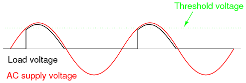
Formas de onda de tiratrón
A medida que el voltaje de suministro de CA sube desde cero voltios hasta su primer pico, el voltaje de carga permanece en cero (sin corriente de carga) hasta que se alcanza el voltaje umbral. En ese punto, el tubo se "enciende" y comienza a conducir, el voltaje de carga sigue ahora al voltaje de CA durante el resto del medio ciclo. El voltaje de carga existe (y por lo tanto la corriente de carga) incluso cuando la forma de onda del voltaje de CA ha caído por debajo del valor umbral del tubo. Esto es histéresis en funcionamiento: el tubo permanece en su modo conductor más allá del punto donde se encendió por primera vez, y continúa conduciendo hasta que allí el voltaje de suministro cae a casi cero voltios. Debido a que los tubos de tiratrón son dispositivos unidireccionales (diodos), no se desarrolla voltaje a través de la carga durante el semiciclo negativo de CA. En los circuitos prácticos de tiratrón, múltiples tubos dispuestos en alguna forma de circuito rectificador de onda completa para facilitar la alimentación de CC de onda completa a la carga.
El tubo tiratrón se ha aplicado a un circuito oscilador de relajación.[VTS]La frecuencia está controlada por un pequeño voltaje CC entre la red y el cátodo. (Ver figura below) Este oscilador controlado por voltaje se conoce comoVCO. Los osciladores de relajación producen una salida muy no sinusoidal y existen principalmente como circuitos de demostración (como es el caso aquí) o en aplicaciones donde es deseable la forma de onda rica en armónicos.[MET]
{kind=link}
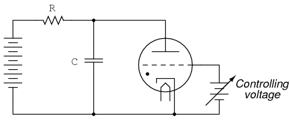
Oscilador de relajación tiratrón controlado por voltaje
Hablo de tubos de tiratrón en tiempo pasado por una buena razón: los componentes semiconductores modernos han dejado obsoleta la tecnología de tubos de tiratrón para todas las aplicaciones, salvo unas pocas, muy especiales. No es casualidad que la palabratiristortiene mucha similitud con la palabratiratrón, para esta clase de componentes semiconductores hace más o menos lo mismo: utilizarhysterenciende y apaga éticamente la corriente. Son estos dispositivos modernos a los que ahora centramos nuestra atención.
- REVISAR:
- Eléctricohistéresis, la tendencia de un componente a permanecer "encendido" (conductor) después de que comienza a conducir y a permanecer "apagado" (no conductor) después de que deja de conducir, ayuda a explicar por qué los rayos existen como sobretensiones momentáneas de corriente en lugar de descargas continuas a través del aire.
- Los tubos de descarga de gas simples, como las lámparas de neón, presentan histéresis eléctrica.
- Se han fabricado tubos de descarga de gas más avanzados con elementos de control para que su voltaje de "encendido" pueda ajustarse mediante una señal externa. El más común de estos tubos se llamótiratrón.
- Circuitos osciladores simples llamadososciladores de relajaciónpuede crearse con nada más que una red de carga de resistencia-condensador y un dispositivo histerético conectado a través del condensador.
The Shockley Diode
Nuestra exploración de los tiristores comienza con un dispositivo llamadodiodo de cuatro capas, también conocido comodiodo PNPN, o undiodo shockleyen honor a su inventor, William Shockley. Esto no debe confundirse con undiodo Schottky, ese dispositivo semiconductor de metal de dos capas conocido por su alta velocidad de conmutación. Una burda ilustración del diodo Shockley, que se ve a menudo en los libros de texto, es un sándwich de cuatro capas de material semiconductor P-N-P-N. Figura below.
{kind=link}
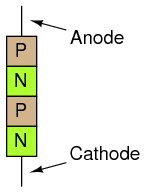
Shockley o diodo de 4 capas
Desafortunadamente, esta simple ilustración no aclara al espectador cómo funciona ni por qué. Considere una representación alternativa de la construcción del dispositivo en la Figura below.
{kind=link}
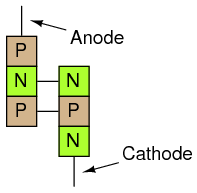
Transistor equivalente del diodo Shockley
Visto así, parece ser un conjunto de transistores bipolares interconectados, uno PNP y otro NPN. Dibujado utilizando símbolos esquemáticos estándar y respetando las concentraciones de dopaje de la capa que no se muestran en la última imagen, el diodo Shockley tiene este aspecto (Figura below)
{kind=link}
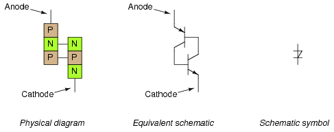
Diodo Shockley: diagrama físico, diagrama esquemático equivalente y símbolo esquemático.
Conectemos uno de estos dispositivos a una fuente de voltaje variable y veamos qué sucede: (Figura below)
{kind=link}
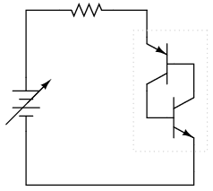
Circuito equivalente de diodo Shockley alimentado.
Sin voltaje aplicado, por supuesto no habrá corriente. A medida que el voltaje aumenta inicialmente, todavía no habrá corriente porque ninguno de los transistores puede encenderse: ambos estarán en modo de corte. Para entender por qué es así, considere lo que se necesita para encender un transistor de unión bipolar: corriente a través de la unión base-emisor. Como puede ver en el diagrama, la corriente de base a través del transistor inferior está controlada por el transistor superior, y la corriente de base a través del transistor superior está controlada por el transistor inferior. En otras palabras, ningún transistor puede encenderse hasta que elotroEl transistor se enciende. Lo que tenemos aquí, en términos vernáculos, se conoce como un callejón sin salida.
Entonces, ¿cómo puede un diodo Shockley conducir corriente si los transistores que lo constituyen se mantienen obstinadamente en un estado de corte? La respuesta está en el comportamiento derealtransistores en contraposición aidealtransistores. Un transistor bipolar ideal nunca conducirá la corriente del colector si no fluye corriente de base, sin importar cuánto o poco voltaje apliquemos entre el colector y el emisor. Los transistores reales, por otro lado, tienen límites definidos en cuanto a la cantidad de voltaje colector-emisor que cada uno puede soportar antes de que se descomponga y conduzca. Si dos transistores reales se conectan de esta manera para formar un diodo Shockley, cada uno conducirá si la batería aplica suficiente voltaje entre el ánodo y el cátodo para provocar que uno de ellos se rompa. Una vez que un transistor se descompone y comienza a conducir, permitirá que la corriente de base pase a través del otro transistor, lo que hará que se encienda de manera normal, lo que luego permitirá que la corriente de base pase a través del primer transistor. El resultado final es que ambos transistores se saturarán y ahora se mantendrán encendidos en lugar de apagados.
Entonces, podemos forzar el encendido de un diodo Shockley aplicando suficiente voltaje entre el ánodo y el cátodo. Como hemos visto, esto inevitablemente hará que uno de los transistores se encienda, lo que luego enciende el otro transistor y, en última instancia, "bloquea" ambos transistores en el lugar donde cada uno tenderá a permanecer. Pero ¿cómo conseguimos ahora que los dos transistores se apaguen de nuevo? Incluso si el voltaje aplicado se reduce a un punto muy por debajo de lo que se necesitó para que el diodo Shockley condujera, seguirá conduciendo porque ambos transistores ahora tienen corriente base para mantener una conducción regular y controlada. La respuesta a esto es reducir el voltaje aplicado a un punto mucho más bajo donde fluye muy poca corriente para mantener la polarización del transistor, momento en el cual uno de los transistores se cortará, lo que luego detendrá la corriente de base a través del otro transistor, sellando ambos transistores en el estado "apagado" como lo estaba cada uno antes de que se aplicara cualquier voltaje.
Si graficamos esta secuencia de eventos y trazamos los resultados en un gráfico I/V, la histéresis es evidente. Primero, observaremos el circuito cuando la fuente de voltaje CC (batería) se establece en voltaje cero: (Figura below)
{kind=link}
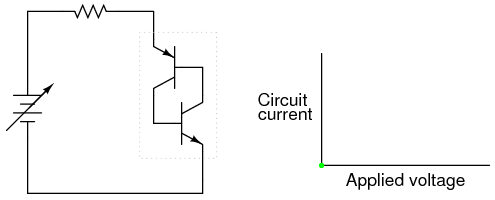
Voltaje aplicado cero; corriente cero
A continuación, aumentaremos constantemente el voltaje de CC. La corriente a través del circuito es cero o casi cero, ya que no se ha alcanzado el límite de ruptura para ninguno de los transistores: (Figura below)
{kind=link}
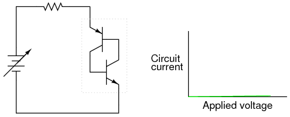
Algún voltaje aplicado; todavía no hay corriente
Cuando se alcanza el límite de ruptura de voltaje de un transistor, comenzará a conducir la corriente del colector aunque todavía no haya pasado corriente de base por él. Normalmente, este tipo de tratamiento destruiría un transistor de unión bipolar, pero las uniones PNP que comprenden un diodo Shockley están diseñadas para soportar este tipo de abuso, de manera similar a la forma en que se construye un diodo Zener para manejar una ruptura inversa sin sufrir daños. A modo de ilustración, asumiré que el transistor inferior se descompone primero, enviando corriente a través de la base del transistor superior: (Figura below)
{kind=link}
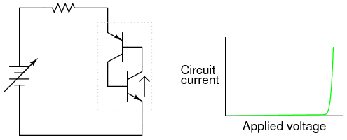
Más voltaje aplicado; El transistor inferior se estropea.
A medida que el transistor superior recibe corriente de base, se enciende como se esperaba. Esta acción permite que el transistor inferior conduzca normalmente, y los dos transistores se "sellan" en el estado "encendido". La corriente total se ve rápidamente en el circuito: (Figura below)
{kind=link}
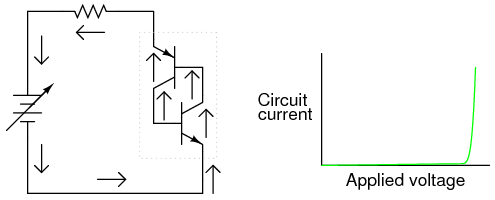
Los transistores ahora son completamente conductores.
La retroalimentación positiva mencionada anteriormente en este capítulo es claramente evidente aquí. Cuando un transistor se estropea, permite que la corriente pase a través de la estructura del dispositivo. Esta corriente puede verse como la señal de "salida" del dispositivo. Una vez que se establece una corriente de salida, funciona para mantener ambos transistores en saturación, asegurando así la continuación de una corriente de salida sustancial. En otras palabras, una corriente de salida "realimenta" positivamente la entrada (corriente de base del transistor) para mantener ambos transistores en el estado "encendido", reforzando (oregenerando) en sí.
Con ambos transistores mantenidos en un estado de saturación con la presencia de una amplia corriente de base, cada uno continuará conduciendo incluso si el voltaje aplicado se reduce considerablemente desde el nivel de ruptura. El efecto de la retroalimentación positiva es mantener ambos transistores en un estado de saturación a pesar de la pérdida del estímulo de entrada (el alto voltaje original necesario para descomponer un transistor y provocar una corriente de base a través del otro transistor): (Figura below)
{kind=link}
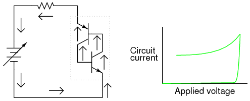
Corriente mantenida incluso cuando se reduce el voltaje.
Sin embargo, si la fuente de voltaje de CC se reduce demasiado, el circuito eventualmente llegará a un punto en el que no habrá suficiente corriente para mantener ambos transistores en saturación. A medida que un transistor pasa cada vez menos corriente de colector, reduce la corriente de base para el otro transistor, reduciendo así la corriente de base para el primer transistor. El círculo vicioso continúa rápidamente hasta que ambos transistores caen en corte: (Figura below)
{kind=link}
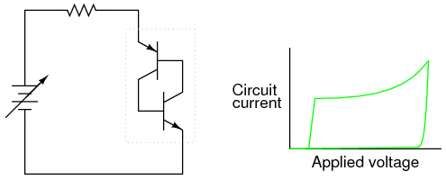
Si el voltaje cae demasiado, ambos transistores se apagan.
Aquí, la retroalimentación positiva está nuevamente en funcionamiento: el hecho de que el ciclo causa/efecto entre ambos transistores sea "vicioso" (una disminución en la corriente a través de uno funciona para disminuir la corriente a través del otro, disminuyendo aún más la corriente a través del primer transistor) indica una relación positiva entre la salida (corriente controlada) y la entrada (corriente que controla a través de las bases de los transistores).
La curva resultante en el gráfico es clásicamente histerética: a medida que la señal de entrada (voltaje) aumenta y disminuye, la salida (corriente) no sigue el mismo camino hacia abajo que hacia arriba: (Figura below)
{kind=link}
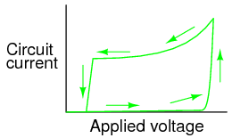
Curva histerética
En términos simples, el diodo Shockley tiende a permanecer encendido una vez encendido y apagado una vez apagado. Ningún modo "intermedio" o "activo" en su funcionamiento: es un dispositivo puramente encendido o apagado, como lo son todos los tiristores.
Se aplican algunos términos especiales a los diodos Shockley y a todos los demás dispositivos de tiristores construidos sobre la base de los diodos Shockley. Primero está el término utilizado para describir su estado "encendido":cerrado. La palabra "pestillo" recuerda al mecanismo de cerradura de una puerta, que tiende a mantener la puerta cerrada una vez que se ha cerrado. El términodisparose refiere al inicio de un estado bloqueado. Para que un diodo Shockley se enganche, se debe aumentar el voltaje aplicado hastarupturase logra. Aunque esta acción se describe mejor como rotura de transistorabajo, la pausa del términoencimase utiliza en su lugar porque el resultado es un par de transistores en saturación mutua en lugar de destrucción del transistor. Un diodo Shockley bloqueado se restablece a su estado no conductor reduciendo la corriente a través de él hasta queabandono de baja corrienteocurre.
Tenga en cuenta que los diodos Shockley pueden dispararse de una forma distinta a la de ruptura: excesivaaumento de voltaje, odv/dt. Si el voltaje aplicado a través del diodo aumenta a una velocidad de cambio alta, puede dispararse. Esto puede provocar el enganche (encendido) del diodo debido a las capacitancias de unión inherentes dentro de los transistores. Los condensadores, como recordarás, se oponencambiosen voltaje extrayendo o suministrando corriente. Si el voltaje aplicado a través de un diodo Shockley aumenta a un ritmo demasiado rápido, esas pequeñas capacitancias consumirán suficiente corriente durante ese tiempo para activar el par de transistores, encendiéndolos a ambos. Por lo general, esta forma de enclavamiento no es deseable y se puede minimizar filtrando la alta frecuencia (aumentos rápidos de voltaje) del diodo con inductores en serie y redes de resistencia-condensador en paralelo llamadasamortiguadores: (Cifra below)
{kind=link}
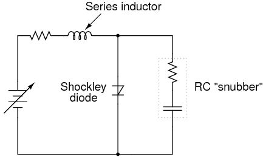
Tanto el circuito “amortiguador” del inductor en serie como del resistor-condensador en paralelo ayudan a minimizar la exposición del diodo Shockley a un voltaje excesivamente creciente.
El límite de aumento de voltaje de un diodo Shockley se conoce comotasa crítica de aumento de voltaje. Los fabricantes suelen proporcionar esta especificación para los dispositivos que venden.
- REVISAR:
- Los diodos Shockley son dispositivos semiconductores PNPN de cuatro capas. Estos se comportan como un par de transistores PNP y NPN interconectados.
- Como todos los tiristores, los diodos Shockley tienden a permanecer encendidos una vez encendidos (cerrado), y manténgase apagado una vez apagado.
- Para bloquear un diodo Shockley, supere la relación ánodo-cátodo.rupturavoltaje, o exceder el ánodo-cátodotasa crítica de aumento de voltaje.
- Para hacer que un diodo Shockley deje de conducir, reduzca la corriente que lo atraviesa a un nivel por debajo de suabandono de baja corrientelímite.
The DIAC
Como todos los diodos, los diodos Shockley son dispositivos unidireccionales; es decir, estos sólo conducen corriente en una dirección. Si se desea un funcionamiento bidireccional (CA), se pueden unir dos diodos Shockley en paralelo orientados en diferentes direcciones para formar un nuevo tipo de tiristor, eldiac: (Cifra below)
{kind=link}
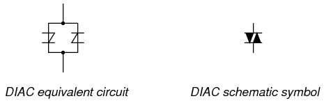
El DIAC
Un DIAC operado con un voltaje de CC se comporta exactamente igual que un diodo Shockley. Sin embargo, con AC el comportamiento es diferente de lo que cabría esperar. Debido a que la corriente alterna invierte repetidamente su dirección, los DIAC no permanecerán bloqueados por más de medio ciclo. Si un DIAC se bloquea, continuará conduciendo corriente solo mientras haya voltaje disponible para impulsar suficiente corriente en esa dirección. Cuando la polaridad de CA se invierte, como ocurre dos veces por ciclo, el DIAC se desconectará debido a una corriente insuficiente, lo que requerirá otra ruptura antes de que vuelva a conducir. El resultado es la forma de onda actual en la Figura below.
{kind=link}
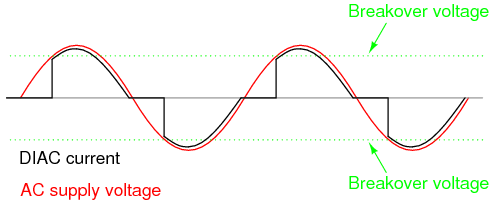
Formas de onda DIAC
Los DIAC casi nunca se utilizan solos, sino junto con otros dispositivos de tiristores.
The Silicon-Controlled Rectifier (SCR)
Los diodos Shockley son dispositivos curiosos, pero de aplicación bastante limitada. Sin embargo, su utilidad puede ampliarse equipándolos con otro medio de cierre. Al hacerlo, cada uno se convierte en verdaderos dispositivos amplificadores (aunque sólo sea en modo encendido/apagado), y nos referimos a ellos comorectificadores controlados por silicio, oSCRs.
La progresión del diodo Shockley al SCR se logra con una pequeña adición, en realidad nada más que una conexión de un tercer cable a la estructura PNPN existente: (Figura below)
{kind=link}
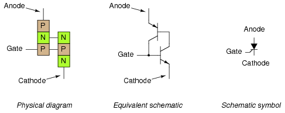
El rectificador controlado por silicio (SCR)
Si se deja la puerta de un SCRflotante(desconectado), se comporta exactamente como un diodo Shockley. Puede bloquearse mediante un voltaje de ruptura o excediendo la tasa crítica de aumento de voltaje entre el ánodo y el cátodo, tal como ocurre con el diodo Shockley. La caída se logra reduciendo la corriente hasta que uno o ambos transistores internos entran en modo de corte, también como el diodo Shockley. Sin embargo, debido a que el terminal de puerta se conecta directamente a la base del transistor inferior, puede usarse como medio alternativo para bloquear el SCR. Al aplicar un pequeño voltaje entre la puerta y el cátodo, el transistor inferior será forzadoonpor la corriente de base resultante, que hará que el transistor superior conduzca, lo que luego suministra corriente a la base del transistor inferior para que ya no necesite ser activado por un voltaje de puerta. La corriente de compuerta necesaria para iniciar el enganche, por supuesto, será mucho menor que la corriente a través del SCR desde el cátodo al ánodo, por lo que el SCR logra cierta amplificación.
Este método de asegurar la conducción SCR se llamadesencadenante, y es, con diferencia, la forma más común de bloquear los SCR en la práctica real. De hecho, los SCR generalmente se eligen de modo que su voltaje de ruptura sea mucho mayor que el voltaje más alto que se espera que se experimente desde la fuente de energía, de modo que se pueda encender.solopor un pulso de voltaje intencional aplicado a la puerta.
Cabe mencionar que los SCR puedena vecesapagarse cortando directamente sus terminales de compuerta y cátodo, o "activando en reversa" la compuerta con un voltaje negativo (en referencia al cátodo), de modo que el transistor inferior se vea forzado a cortarse. Digo que esto es "a veces" posible porque implica desviar toda la corriente del colector del transistor superior más allá de la base del transistor inferior. Esta corriente puede ser sustancial, lo que dificulta, en el mejor de los casos, el apagado activado de un SCR. Una variación del SCR, llamadaApagado de puertatiristor, oGTO, facilita esta tarea. ¡Pero incluso con un GTO, la corriente de compuerta requerida para apagarlo puede ser hasta el 20% de la corriente del ánodo (carga)! El símbolo esquemático de un GTO se muestra en la siguiente ilustración: (Figura below)
{kind=link}
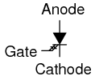
El tiristor de apagado de puerta (GTO)
Los SCR y los GTO comparten los mismos esquemas equivalentes (dos transistores conectados en forma de retroalimentación positiva), siendo las únicas diferencias los detalles de construcción diseñados para otorgar al transistor NPN una β mayor que al PNP. Esto permite que una corriente de compuerta más pequeña (directa o inversa) ejerza un mayor grado de control sobre la conducción del cátodo al ánodo, siendo el estado bloqueado del transistor PNP más dependiente del NPN que viceversa. El tiristor Gate-Turn-Off también se conoce con el nombre deInterruptor controlado por puerta, oGCS.
Se puede realizar una prueba rudimentaria de la función SCR, o al menos de identificación del terminal, con un óhmetro. Debido a que la conexión interna entre la puerta y el cátodo es una unión PN única, un medidor debe indicar continuidad entre estos terminales con el cable de prueba rojo en la puerta y el cable de prueba negro en el cátodo de esta manera: (Figura below)
{kind=link}
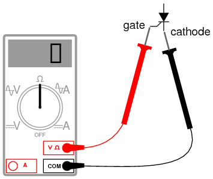
Prueba rudimentaria de SCR
Todas las demás mediciones de continuidad realizadas en un SCR se mostrarán "abiertas" ("OL" en algunas pantallas de multímetros digitales). Debe entenderse que esta prueba es muy tosca y nonotconstituyen una evaluación integral del SCR. Es posible que un SCR dé buenas indicaciones del óhmetro y aun así esté defectuoso. En última instancia, la única forma de probar un SCR es someterlo a una corriente de carga.
Si está utilizando un multímetro con función de "verificación de diodo", la indicación de voltaje de la unión puerta-cátodo que obtenga puede corresponder o no a lo que se espera de una unión PN de silicio (aproximadamente 0,7 voltios). En algunos casos, leerá un voltaje de unión mucho más bajo: apenas centésimas de voltio. Esto se debe a una resistencia interna conectada entre la puerta y el cátodo incorporada en algunos SCR. Esta resistencia se agrega para hacer que el SCR sea menos susceptible a disparos falsos por picos de voltaje falsos, por "ruido" del circuito o por descargas eléctricas estáticas. En otras palabras, tener una resistencia conectada a través de la unión puerta-cátodo requiere quefuerteSe aplicará una señal de activación (corriente sustancial) para bloquear el SCR. Esta característica se encuentra a menudo en los SCR más grandes, no en los SCR pequeños. Tenga en cuenta que un SCR con una resistencia interna conectada entre la puerta y el cátodo indicará continuidad.en ambas direccionesentre esas dos terminales: (Figura below)
{kind=link}
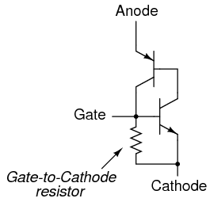
Los SCR más grandes tienen una resistencia de puerta a cátodo.
Los SCR "normales", que carecen de esta resistencia interna, a veces se denominanpuerta sensibleSCR debido a su capacidad de activarse con la más mínima señal de puerta positiva.
El circuito de prueba para un SCR es práctico como herramienta de diagnóstico para verificar SCR sospechosos y también una excelente ayuda para comprender el funcionamiento básico del SCR. Se utiliza una fuente de voltaje CC para alimentar el circuito y se utilizan dos interruptores de botón para bloquear y desbloquear el SCR, respectivamente: (Figura below)
{kind=link}
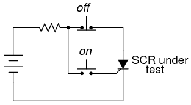
Circuito de prueba SCR
Al accionar el interruptor de botón "encendido" normalmente abierto se conecta la puerta al ánodo, lo que permite que la corriente provenga del terminal negativo de la batería, a través de la unión PN cátodo-puerta, a través del interruptor, a través de la resistencia de carga y de regreso a la batería. Esta corriente de compuerta debería obligar al SCR a engancharse, permitiendo que la corriente pase directamente del cátodo al ánodo sin que se dispare más a través de la compuerta. Cuando se suelta el botón de "encendido", la carga debe permanecer energizada.
Al presionar el interruptor de botón de "apagado", normalmente cerrado, se interrumpe el circuito, lo que obliga a detener la corriente a través del SCR, lo que lo obliga a apagarse (caída de corriente baja).
Si el SCR no se traba, el problema puede estar en la carga y no en el SCR. Se requiere una cierta cantidad mínima de corriente de carga para mantener el SCR bloqueado en el estado "encendido". Este nivel mínimo de corriente se llamamanteniendo la corriente. Es posible que una carga con un valor de resistencia demasiado grande no consuma suficiente corriente para mantener un SCR bloqueado cuando cesa la corriente de la puerta, dando así la falsa impresión de un SCR defectuoso (desbloqueable) en el circuito de prueba. Los fabricantes deben proporcionar valores actuales para diferentes SCR. Los valores típicos de corriente de mantenimiento oscilan entre 1 miliamperio y 50 miliamperios o más para unidades más grandes.
Para que la prueba sea completamente exhaustiva, es necesario probar más que la acción desencadenante. El límite de voltaje de ruptura directa del SCR podría probarse aumentando el suministro de voltaje de CC (sin presionar botones) hasta que el SCR se enganche por sí solo. Tenga en cuenta que una prueba de ruptura puede requerir un voltaje muy alto: ¡muchos SCR de potencia tienen tensiones nominales de ruptura de 600 voltios o más! Además, si se dispone de un generador de voltaje de pulso, la tasa crítica de aumento de voltaje para el SCR podría probarse de la misma manera: someterlo a voltajes de suministro de pulsos de diferentes tasas de V/tiempo sin interruptores de botón accionados y ver cuándo se bloquea.
De esta forma sencilla, el circuito de prueba SCR podría ser suficiente como circuito de control de arranque/parada para un motor de CC, una lámpara u otra carga práctica: (Figura below)
{kind=link}
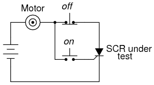
Circuito de control de arranque/parada del motor de CC
Otro uso práctico del SCR en un circuito de CC es comopalancaDispositivo de protección contra sobretensiones. Un circuito "palanca" consiste en un SCR colocado en paralelo con la salida de una fuente de alimentación de CC, para colocar un cortocircuito directo en la salida de esa fuente para evitar que un voltaje excesivo llegue a la carga. Se evitan daños al SCR y a la fuente de alimentación mediante la colocación sensata de un fusible o una resistencia en serie sustancial delante del SCR para limitar la corriente de cortocircuito: (Figura below)
{kind=link}
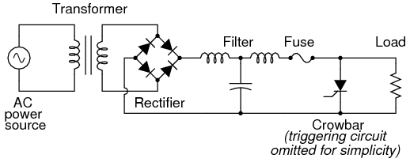
Circuito de palanca utilizado en fuente de alimentación de CC.
Algún dispositivo o circuito que detecte el voltaje de salida se conectará a la puerta del SCR, de modo que cuando ocurra una condición de sobretensión, se aplicará voltaje entre la puerta y el cátodo, activando el SCR y obligando a quemar el fusible. El efecto será aproximadamente el mismo que dejar caer una palanca de acero sólido directamente sobre los terminales de salida de la fuente de alimentación, de ahí el nombre del circuito.
La mayoría de las aplicaciones del SCR son para el control de energía de CA, a pesar de que los SCR son inherentemente dispositivos de CC (unidireccionales). Si se requiere corriente de circuito bidireccional, se pueden usar múltiples SCR, con uno o más orientados en cada dirección para manejar la corriente a través de ambos semiciclos de la onda de CA. La razón principal por la que los SCR se utilizan para aplicaciones de control de energía de CA es la respuesta única de un tiristor a una corriente alterna. Como vimos, el tubo de tiratrón (la versión de tubo de electrones del SCR) y el DIAC, un dispositivo histerético que se activa durante una parte de un semiciclo de CA, se bloquearán y permanecerán encendidos durante el resto del semiciclo hasta que la corriente de CA disminuya a cero, como debe ser para comenzar el siguiente medio ciclo. Justo antes del punto de cruce por cero de la forma de onda actual, el tiristor se apagará debido a una corriente insuficiente (este comportamiento también se conoce comoconmutación natural) y debe ser despedido nuevamente durante el siguiente ciclo. El resultado es una corriente de circuito equivalente a una onda sinusoidal "cortada". Para revisión, aquí está el gráfico de la respuesta de un DIAC a un voltaje de CA cuyo pico excede el voltaje de ruptura del DIAC: (Figura below)
{kind=link}
Respuesta bidireccional DIAC
Con el DIAC, ese límite de tensión de ruptura era una cantidad fija. Con el SCR, tenemos control sobre exactamente cuándo se bloquea el dispositivo activando la puerta en cualquier momento a lo largo de la forma de onda. Al conectar un circuito de control adecuado a la puerta de un SCR, podemos "cortar" la onda sinusoidal en cualquier punto para permitir un control de potencia proporcional al tiempo para una carga.
Tome el circuito en la figura. belowcomo ejemplo. Aquí, se coloca un SCR en un circuito para controlar la energía a una carga desde una fuente de CA.
{kind=link}
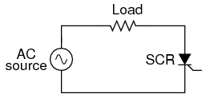
Control SCR de alimentación de CA
Al ser un dispositivo unidireccional (unidireccional), como mucho solo podemos entregar potencia de media onda a la carga, en el medio ciclo de CA donde la polaridad del voltaje de suministro es positiva en la parte superior y negativa en la parte inferior. Sin embargo, para demostrar el concepto básico del control proporcional al tiempo, este circuito simple es mejor que uno que controle la potencia de onda completa (que requeriría dos SCR).
Sin activación de la puerta y con el voltaje de la fuente de CA muy por debajo del voltaje nominal de ruptura del SCR, el SCR nunca se encenderá. Conectar la puerta del SCR al ánodo a través de un diodo rectificador estándar (para evitar la corriente inversa a través de la puerta en el caso de que el SCR contenga una resistencia de cátodo de puerta incorporada), permitirá que el SCR se active casi inmediatamente al comienzo de cada medio ciclo positivo: (Figura below)
{kind=link}
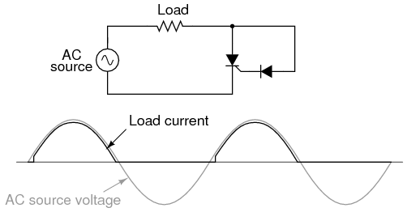
Puerta conectada directamente al ánodo a través de un diodo; corriente de media onda casi completa a través de la carga.
Sin embargo, podemos retrasar la activación del SCR insertando algo de resistencia en el circuito de compuerta, aumentando así la cantidad de caída de voltaje requerida antes de que suficiente corriente de compuerta active el SCR. En otras palabras, si hacemos más difícil que los electrones fluyan a través de la puerta agregando una resistencia, el voltaje de CA tendrá que alcanzar un punto más alto en su ciclo antes de que haya suficiente corriente en la puerta para encender el SCR. El resultado está en la figura. below.
{kind=link}
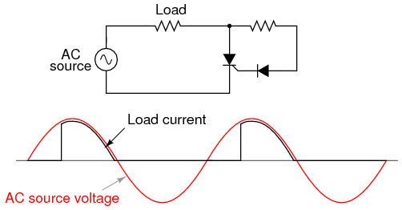
Resistencia insertada en el circuito de la puerta; Corriente inferior a media onda a través de la carga.
Con la media onda sinusoidal cortada en mayor medida por el disparo retardado del SCR, la carga recibe menos potencia promedio (la energía se entrega durante menos tiempo a lo largo de un ciclo). Al hacer que la resistencia de compuerta en serie sea variable, podemos hacer ajustes a la potencia proporcionada en el tiempo: (Figura below)
{kind=link}
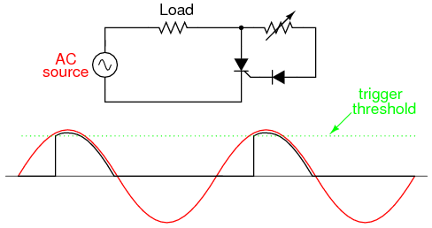
Al aumentar la resistencia, se eleva el nivel de umbral, lo que provoca que se entregue menos potencia a la carga. Al disminuir la resistencia, se reduce el nivel de umbral, lo que hace que se entregue más potencia a la carga.
Desafortunadamente, este esquema de control tiene una limitación significativa. Al utilizar la forma de onda de la fuente de CA para nuestra señal de activación SCR, limitamos el control a la primera mitad del semiciclo de la forma de onda. En otras palabras, no nos es posible esperar hastadespuésel pico de la onda para activar el SCR. Esto significa que podemos reducir la potencia sólo hasta el punto en que el SCR se enciende en el pico de la onda: (Figura below)
{kind=link}
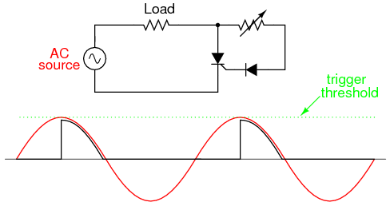
Circuito en configuración de potencia mínima
Aumentar más el umbral de activación hará que el circuito no se active en absoluto, ya que ni siquiera el pico del voltaje de alimentación de CA será suficiente para activar el SCR. El resultado será que no llegará energía a la carga.
Una solución ingeniosa a este dilema de control se encuentra añadiendo un condensador de desplazamiento de fase al circuito: (Figura below)
{kind=link}
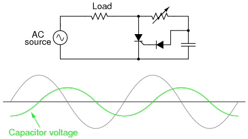
Adición de un condensador de desplazamiento de fase al circuito.
La forma de onda más pequeña que se muestra en el gráfico es el voltaje a través del capacitor. Para ilustrar el cambio de fase, asumo una condición de máxima resistencia de control donde el SCR no se activa en absoluto sin corriente de carga, salvo la poca corriente que pasa a través de la resistencia de control y el capacitor. El voltaje de este capacitor se desfasará desde 0oa 90orezagado respecto de la forma de onda de CA de la fuente de alimentación. Cuando este voltaje desfasado alcance un nivel suficientemente alto, el SCR se activará.
Con suficiente voltaje a través del capacitor para activar periódicamente el SCR, la forma de onda de corriente de carga resultante se verá como en la Figura below)
{kind=link}
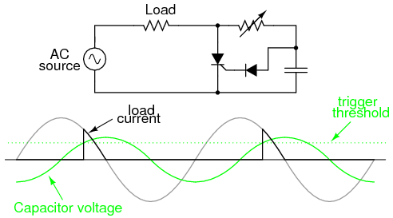
La señal desfasada activa el SCR en conducción.
Debido a que la forma de onda del capacitor aún escrecienteDespués de que la forma de onda de alimentación de CA principal haya alcanzado su pico, es posible activar el SCR en un nivel de umbral más allá de ese pico, cortando así la onda de corriente de carga más de lo que era posible con el circuito más simple. En realidad, la forma de onda del voltaje del capacitor es un poco más compleja que lo que se muestra aquí, su forma sinusoidal se distorsiona cada vez que se activa el SCR. Sin embargo, lo que estoy tratando de ilustrar aquí es la acción de activación retardada obtenida con la red RC de cambio de fase; por lo tanto, una forma de onda simplificada y sin distorsión sirve bien para este propósito.
Los SCR también pueden ser activados o "disparados" por circuitos más complejos. Si bien el circuito mostrado anteriormente es suficiente para una aplicación simple como el control de una lámpara, los controles de motores industriales grandes a menudo dependen de métodos de activación más sofisticados. A veces, se utilizan transformadores de impulsos para acoplar un circuito de disparo a la puerta y al cátodo de un SCR para proporcionar aislamiento eléctrico entre los circuitos de disparo y de potencia: (Figura below)
{kind=link}
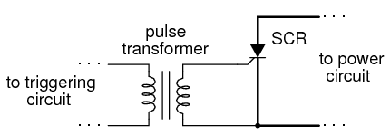
El acoplamiento del transformador de la señal de disparo proporciona aislamiento.
Cuando se utilizan múltiples SCR para controlar la energía, sus cátodos a menudo sonnoteléctricamente comunes, lo que dificulta la conexión de un único circuito de activación a todos los SCR por igual. Un ejemplo de esto es elpuente rectificador controladocomo se muestra en la figura below.
{kind=link}
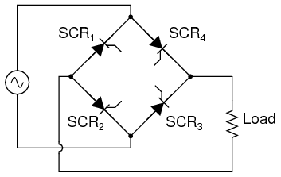
Puente rectificador controlado
En cualquier circuito rectificador de puente, los diodos rectificadores (en este ejemplo, los SCR rectificadores) deben conducir en pares opuestos. RCS1y RCS3deben dispararse simultáneamente y SCR2y RCS4deben dispararse juntos como un par. Sin embargo, como notará, estos pares de SCR no comparten las mismas conexiones catódicas, lo que significa que no funcionaría simplemente poner en paralelo sus respectivas conexiones de puerta y conectar una única fuente de voltaje para activar ambas: (Figura below)
{kind=link}
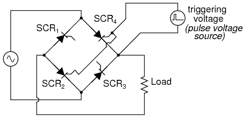
Esta estrategia no funcionará para activar el SCR2y RCS4como pareja.
Aunque la fuente de voltaje de activación que se muestra activará el SCR4, no activará SCR2correctamente porque los dos tiristores no comparten una conexión de cátodo común para hacer referencia al voltaje de disparo. Transformadores de impulsos que conectan las dos puertas de tiristores a una fuente de voltaje de disparo común.voluntadtrabajo, sin embargo: (Figura below)
{kind=link}
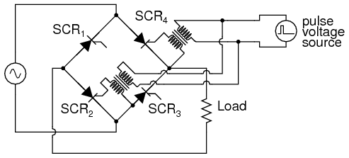
El acoplamiento del transformador de las compuertas permite la activación del SCR.2y RCS4 .
Tenga en cuenta que este circuito solo muestra las conexiones de puerta para dos de los cuatro SCR. Transformadores de impulsos y fuentes de disparo para SCR.1y RCS3, así como los detalles de las propias fuentes de pulso, se han omitido por motivos de simplicidad.
Los puentes rectificadores controlados no se limitan a diseños monofásicos. En la mayoría de los sistemas de control industrial, la alimentación de CA está disponible en forma trifásica para lograr la máxima eficiencia, y los circuitos de control de estado sólido están diseñados para aprovechar esto. Un circuito rectificador controlado trifásico construido con SCR, sin los transformadores de pulso ni los circuitos de activación que se muestran, se vería como en la Figura below.
{kind=link}
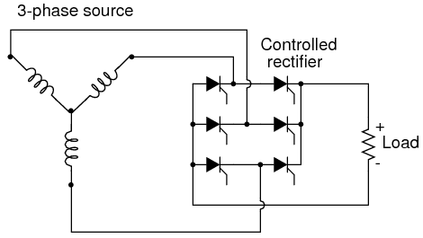
Puente trifásico SCR control de carga
- REVISAR:
- A Rectificador controlado por silicio, oSCR, es esencialmente un diodo Shockley con un terminal adicional agregado. Esta terminal adicional se llamapuerta, y está acostumbrado adesencadenarel dispositivo en conducción (bloquearlo) mediante la aplicación de un pequeño voltaje.
- Para desencadenar, ofuego, se debe aplicar un voltaje SCR entre la puerta y el cátodo, positivo a la puerta y negativo al cátodo. Al probar un SCR, una conexión momentánea entre la puerta y el ánodo es suficiente en polaridad, intensidad y duración para activarlo.
- Los SCR pueden activarse mediante la activación intencional del terminal de compuerta, un voltaje excesivo (ruptura) entre el ánodo y el cátodo, o una tasa excesiva de aumento de voltaje entre el ánodo y el cátodo. Los SCR pueden apagarse si la corriente del ánodo cae por debajo delmanteniendo el valor actual(caída de baja corriente), o "disparando en reversa" la puerta (aplicando un voltaje negativo a la puerta). El disparo inverso sólo es eficaz en ocasiones y siempre implica una corriente de compuerta alta.
- Una variante del SCR, llamada tiristor de apagado y puerta (GTO), está diseñada específicamente para apagarse mediante activación inversa. Incluso entonces, el disparo inverso requiere una corriente bastante alta: normalmente el 20% de la corriente del ánodo.
- Los terminales SCR pueden identificarse mediante un medidor de continuidad: los únicos dos terminales que muestran continuidad entre ellos deben ser la puerta y el cátodo. Los terminales de puerta y cátodo se conectan a una unión PN dentro del SCR, por lo que un medidor de continuidad debe obtener una lectura similar a un diodo entre estos dos terminales con el cable rojo (+) en la puerta y el cable negro (-) en el cátodo. Sin embargo, tenga en cuenta que algunos SCR grandes tienen una resistencia interna conectada entre la puerta y el cátodo, lo que afectará cualquier lectura de continuidad tomada por un medidor.
- Los SCR son verdaderosrectificadores: solo permiten que la corriente los atraviese en una dirección. Esto significa que no pueden usarse solos para el control de energía CA de onda completa.
- Si los diodos en un circuito rectificador se reemplazan por SCR, tiene las características de unrevisadocircuito rectificador, mediante el cual la energía CC a una carga puede ser proporcional en el tiempo activando los SCR en diferentes puntos a lo largo de la forma de onda de energía CA.
The TRIAC
Los SCR son dispositivos de corriente unidireccionales (unidireccionales), lo que los hace útiles para controlar CC únicamente. Si dos SCR se unen en paralelo espalda con espalda tal como se unieron dos diodos Shockley para formar un DIAC, tenemos un nuevo dispositivo conocido comoTRIAC: (Cifra below)
{kind=link}
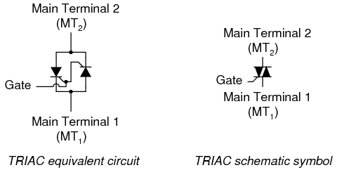
El equivalente de TRIAC SCR y el símbolo esquemático de TRIAC
Debido a que los SCR individuales son más flexibles de usar en sistemas de control avanzados, estos se ven más comúnmente en circuitos como motores; Los TRIAC generalmente se ven en aplicaciones simples y de bajo consumo, como reguladores de intensidad domésticos. En la figura se muestra un circuito de atenuación de lámpara simple. below, completo con la red de resistencia-condensador de cambio de fase necesaria para el disparo después del pico.
{kind=link}
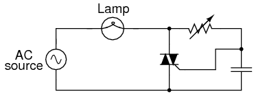
Control de fase de potencia TRIAC
Los TRIAC son conocidos por no dispararsimétricamente. Esto significa que generalmente no se activarán exactamente al mismo nivel de voltaje de compuerta para una polaridad que para la otra. En términos generales, esto no es deseable, porque el disparo asimétrico da como resultado una forma de onda de corriente con una mayor variedad de frecuencias armónicas. Las formas de onda que son simétricas por encima y por debajo de sus líneas centrales promedio se componen únicamente de armónicos impares. Las formas de onda asimétricas, por otro lado, contienen armónicos pares (que pueden o no ir acompañados también de armónicos impares).
Con el fin de reducir el contenido total de armónicos en los sistemas de energía, cuanto menos y menos diversos sean los armónicos, mejor: una razón más por la que se prefieren los SCR individuales a los TRIAC para circuitos de control complejos y de alta potencia. Una forma de hacer que la forma de onda actual del TRIAC sea más simétrica es utilizar un dispositivo externo al TRIAC para cronometrar el pulso de activación. Un DIAC colocado en serie con la puerta hace un buen trabajo al respecto: (Figura below)
{kind=link}
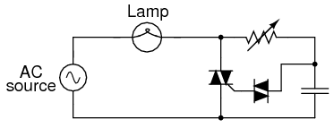
DIAC mejora la simetría del control.
Los voltajes de ruptura DIAC tienden a ser mucho más simétricos (los mismos en una polaridad que en la otra) que los umbrales de voltaje de disparo TRIAC. Dado que el DIAC evita cualquier corriente de compuerta hasta que el voltaje de activación haya alcanzado un cierto nivel repetible en cualquier dirección, el punto de activación del TRIAC de un medio ciclo al siguiente tiende a ser más consistente y la forma de onda más simétrica por encima y por debajo de su línea central.
Prácticamente todas las características y clasificaciones de los SCR se aplican igualmente a los TRIAC, excepto que, por supuesto, los TRIAC son bidireccionales (pueden manejar corriente en ambas direcciones). No es necesario decir mucho más sobre este dispositivo, salvo una advertencia importante sobre las designaciones de sus terminales.
A partir del diagrama de circuito equivalente mostrado anteriormente, uno podría pensar que los terminales principales 1 y 2 eran intercambiables. ¡Estos no lo son! Aunque resulta útil imaginar que el TRIAC está compuesto por dos SCR unidos, en realidad está construido a partir de una sola pieza de material semiconductor, adecuadamente dopado y en capas. Las características operativas reales pueden diferir ligeramente de las del modelo equivalente.
Esto se hace más evidente al contrastar dos diseños de circuitos simples, uno que funciona y otro que no. Los siguientes dos circuitos son una variación del circuito de atenuación de lámpara mostrado anteriormente, con el capacitor de desplazamiento de fase y el DIAC eliminados por razones de simplicidad. Aunque el circuito resultante carece de la capacidad de control fino de la versión más compleja (con condensador y DIAC),hacefunción: (Figura below)
{kind=link}
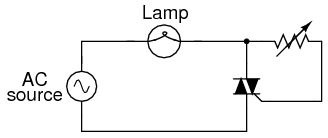
Este circuito con la puerta a MT.2funciona.
Supongamos que intercambiáramos las dos terminales principales del TRIAC. Según el diagrama de circuito equivalente que se muestra anteriormente en esta sección, el intercambio no debería hacer ninguna diferencia. El circuito debería funcionar: (Figura below)
{kind=link}
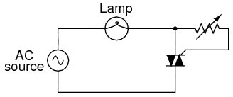
Con la puerta cambiada a MT1, este circuito no funciona.
Sin embargo, si se construye este circuito, se verá que no funciona. La carga no recibirá energía y el TRIAC se negará a disparar en absoluto, sin importar cuán bajo o alto sea el valor de resistencia en el que esté configurada la resistencia de control. La clave para activar con éxito un TRIAC es asegurarse de que la puerta reciba su corriente de disparo delterminal principal 2lado del circuito (el terminal principal en el lado opuesto del símbolo TRIAC del terminal de la puerta). Identificación del TM1y MT2Los terminales deben realizarse a través del número de pieza del TRIAC con referencia a una hoja de datos o libro.
- REVISAR:
- A TRIACActúa de manera muy similar a dos SCR conectados espalda con espalda para operación bidireccional (CA).
- Los controles TRIAC se ven más a menudo en circuitos simples de baja potencia que en circuitos complejos de alta potencia. En circuitos de control de potencia grandes, se tiende a preferir múltiples SCR.
- Cuando se utilizan para controlar la alimentación de CA a una carga, los TRIAC suelen ir acompañados de DIAC conectados en serie con sus terminales de puerta. El DIAC ayuda al TRIAC a disparar de forma más simétrica (más consistentemente de una polaridad a otra).
- Los terminales principales 1 y 2 de un TRIAC sonnotintercambiable.
- Para activar con éxito un TRIAC, la corriente de la compuerta debe provenir delterminal principal 2 (MT2) lado del circuito!
Optothyristors
Al igual que los transistores bipolares, los SCR y TRIAC también se fabrican como dispositivos sensibles a la luz, donde la acción de la luz incidente reemplaza la función de activar el voltaje.
Los SCR controlados ópticamente a menudo se conocen con el acrónimoLASCR, oLderechoAactivadoSCR. Su símbolo, como era de esperar, se parece a la Figura below.
{kind=link}
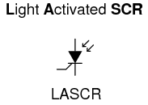
SCR activado por luz
Los TRIAC controlados ópticamente no reciben el honor de tener su propio acrónimo, sino que se les conoce humildemente como opto-TRIAC. Su símbolo esquemático se muestra en la Figura. below.
{kind=link}
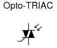
Opto-TRIAC
Los optotiristores (un término general para LASCR o el opto-TRIAC) se encuentran comúnmente dentro de módulos "optoaisladores" sellados.
The Unijunction Transistor (UJT)
Transistor uniunión:Aunque un transistor unijunción no es un tiristor, este dispositivo puede activar tiristores más grandes con un pulso en la base B1. Atransistor unijunturaEstá compuesto por una barra de silicio tipo N que tiene una conexión tipo P en el medio. Ver figura below(a). Las conexiones en los extremos de la barra se conocen como bases B1 y B2; el punto medio tipo P es el emisor. Con el emisor desconectado, la resistencia total RBBO, un elemento de la hoja de datos, es la suma de RB1y rB2como se muestra en la figura below(b). RBBOvaría de 4 a 12 kΩ para diferentes tipos de dispositivos. La relación de enfrentamiento intrínseca η es la relación de RB1a rBBO. Varía de 0,4 a 0,8 para diferentes dispositivos. El símbolo esquemático es Figura below(c)
{kind=link}
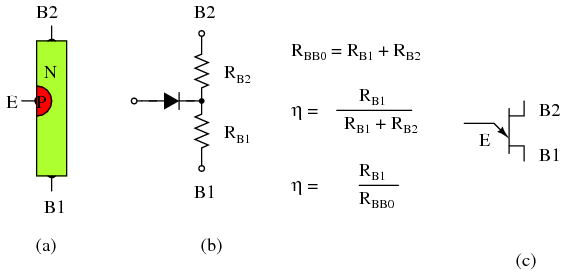
Transistor unijuntura: (a) Construcción, (b) Modelo, (c) Símbolo
La curva característica de corriente versus voltaje del emisor Unijunction (Figura below(a) ) muestra que como VEaumenta, corriente IEaumenta hasta yoPen el punto máximo. Más allá del punto máximo, la corriente aumenta a medida que el voltaje disminuye en la región de resistencia negativa. La tensión alcanza un mínimo en el punto del valle. La resistencia de RB1, la resistencia a la saturación es más baja en el punto del valle.
{kind=link}
IPy yoV, son parámetros de la hoja de datos; Para un 2n2647, yoPy yoVson 2 µA y 4 mA, respectivamente.[AMS] VPes la caída de voltaje en RB1más una caída de diodo de 0,7 V; ver figura below(b). VVse estima que es aproximadamente el 10% de VBB.
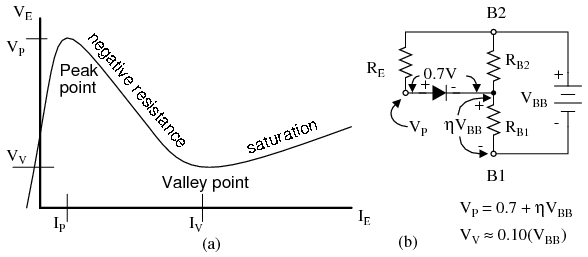
Transistor unijunción: (a) curva característica del emisor, (b) modelo para VP .
El oscilador de relajación en la figura. belowes una aplicación del oscilador unijunción. REcargos CEhasta el punto máximo. El terminal emisor unijunción no tiene efecto sobre el capacitor hasta que se alcanza este punto. Una vez que el voltaje del capacitor, VE, alcanza el punto de tensión máxima VP, la resistencia bajada E-B1 de la base del emisor1 descarga rápidamente el condensador. Una vez que el condensador se descarga por debajo del punto valle VV, la resistencia E-RB1 vuelve a ser de alta resistencia y el condensador puede cargarse nuevamente.
{kind=link}
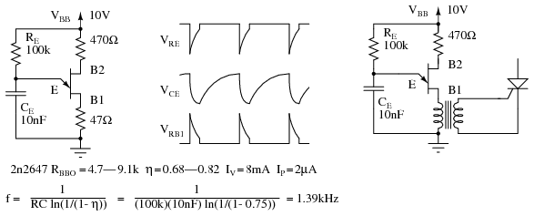
Oscilador de relajación de transistores unijunción y formas de onda. El oscilador impulsa el SCR.
Durante la descarga del capacitor a través de la resistencia de saturación E-B1, se puede ver un pulso en las resistencias de carga externas B1 y B2, Figura above. La resistencia de carga en B1 debe ser baja para no afectar el tiempo de descarga. La resistencia externa en B2 es opcional. Puede ser reemplazado por un cortocircuito. La frecuencia aproximada viene dada por 1/f = T = RC. En la figura se proporciona una expresión más precisa para la frecuencia. above.
La resistencia de carga REdebe caer dentro de ciertos límites. Debe ser lo suficientemente pequeño como para permitirmePfluir según la VBBsuministrar menos VP. Debe ser lo suficientemente grande para abastecerVbasado en la VBBsuministrar menos VV. [MHW]Las ecuaciones y un ejemplo para un 2n2647:
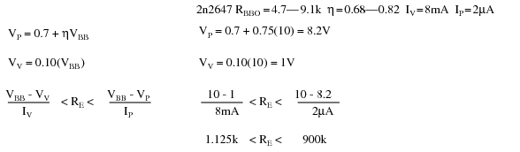
Transistor unijunción programable (PUT):Aunque el transistor unijuntura está catalogado como obsoleto (léase caro si se puede obtener), el transistor unijuntura programable está vivo y coleando. Es económico y está en producción. Aunque cumple una función similar a la del transistor unijunción, el PUT es un tiristor de tres terminales. El PUT comparte la estructura de cuatro capas típica de los tiristores que se muestra en la Figura below. Tenga en cuenta que la puerta, una capa de tipo N cerca del ánodo, se conoce como "puerta del ánodo". Además, el cable de compuerta del símbolo esquemático está unido al extremo del ánodo del símbolo.
{kind=link}
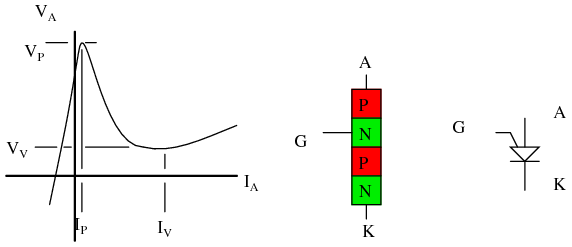
Transistor uniunión programable: curva característica, construcción interna, símbolo esquemático.
La curva característica del transistor unijuntura programable en la figura abovees similar al del transistor uniunión. Este es un gráfico de la corriente anódica I.Aversus voltaje del ánodo VA. El voltaje del cable de la puerta establece, programa, el voltaje máximo del ánodo VP. A medida que aumenta la corriente del ánodo, el voltaje aumenta hasta el punto máximo. A partir de entonces, el aumento de la corriente da como resultado una disminución del voltaje, hasta el punto del valle.
El equivalente PUT del transistor unijunción se muestra en la Figura below. Las resistencias PUT externas R1 y R2 reemplazan las resistencias internas R del transistor unijunctionB1y rB2, respectivamente. Estas resistencias permiten el cálculo de la relación de separación intrínseca η.
{kind=link}
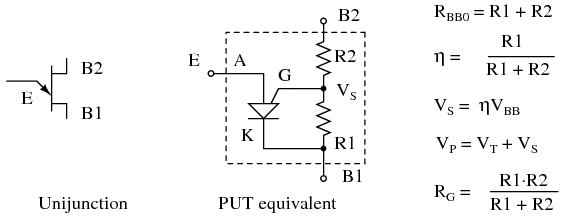
PUT equivalente de transistor unijunction
Cifra belowmuestra la versión PUT del oscilador de relajación unijunción Figura previous. La resistencia R carga el condensador hasta el punto máximo, Figura previous, luego la conducción intensa mueve el punto de operación hacia abajo por la pendiente de resistencia negativa hasta el punto del valle. Un pico de corriente fluye a través del cátodo durante la descarga del capacitor, generando un pico de voltaje a través de las resistencias del cátodo. Después de la descarga del condensador, el punto de funcionamiento vuelve a la pendiente hasta el punto máximo.
{kind=link}
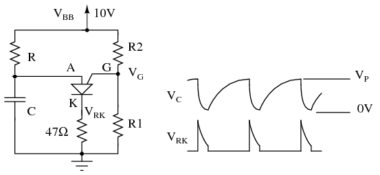
oscilador de relajación PUT
Problema:¿Cuál es el rango de valores adecuados para R en la figura? above, ¿un oscilador de relajación? La resistencia de carga debe ser lo suficientemente pequeña como para suministrar suficiente corriente para elevar el ánodo a VPel punto máximo (Figura previous) mientras se carga el condensador. Una vez VPSe alcanza, el voltaje del ánodo disminuye a medida que aumenta la corriente (resistencia negativa), lo que mueve el punto de operación al valle. Es trabajo del capacitor suministrar la corriente de valle I.V. Una vez descargado, el punto de operación vuelve a la pendiente ascendente hasta el punto máximo. La resistencia debe ser lo suficientemente grande como para que nunca suministre la corriente de valle alto I.P. Si la resistencia de carga alguna vez pudiera suministrar tanta corriente, la resistencia suministraría la corriente de valle después de que se descargara el capacitor y el punto de operación nunca volvería a la condición de alta resistencia a la izquierda del punto pico.
Seleccionamos la misma VBB= 10 V utilizados para el ejemplo del transistor unijunción. Seleccionamos valores de R1 y R2 de modo que η sea aproximadamente 2/3. Calculamos η y VS. El equivalente paralelo de R1, R2 es RG, que sólo se utiliza para hacer selecciones de la Tabla below. junto con vS=10, el valor más cercano a nuestro 6.3, encontramos VT=0,6 V, en la tabla belowy calcular VP.
También encontramos yoPy yoV, las corrientes de pico y valle, respectivamente en la Tabla below. Todavía necesitamos a V.V, el voltaje del valle. Usamos 10% de VBB= 1V, en el ejemplo de unijunción anterior. Consultando la hoja de datos, encontramos la tensión directa V.F= 0,8 V en yoF= 50 mA. La corriente del valle IV=70 µA es mucho menor que IF= 50 mA. Por lo tanto, V.Vdebe ser menor que VF= 0,8 V. ¿Cuánto menos? Para estar seguros configuramos VV=0V. Esto elevará un poco el límite inferior del rango de resistencia.
Elegir R > 143k garantiza que el punto de operación se pueda restablecer desde el punto valle después de la descarga del capacitor. R < 755k permite cargar hasta VPen el punto máximo.
Selected 2n6027 PUT parameters, adapted from 2n6027 datasheet. [ON1]
| Parámetro | Condiciones | min | típico | max | unidades |
|---|---|---|---|---|---|
| VT | V | ||||
| VS=10V, RG=1Meg | 0.2 | 0.7 | 1.6 | ||
| VS=10V, RG=10k | 0.2 | 0.35 | 0.6 | ||
| IP | µA | ||||
| VS=10V, RG=1Meg | - | 1.25 | 2.0 | ||
| VS=10V, RG=10k | - | 4.0 | 5.0 | ||
| IV | µA | ||||
| VS=10V, RG=1Meg | - | 18 | 50 | ||
| VS=10V, RG=10k | 70 | 150 | - | ||
| VS=10V, RG=200Ω | 1500 | - | - | ||
| VF | IF=50mA | - | 0.8 | 1.5 | V |
Cifra belowmuestre el oscilador de relajación PUT con los valores de resistencia finales. También se muestra una aplicación práctica de un PUT que activa un SCR. Este circuito necesita una V.BBsuministro sin filtrar (no mostrado) dividido desde el puente rectificador para restablecer el oscilador de relajación después de cada cruce por cero de potencia. La resistencia variable debe tener una resistencia mínima en serie con ella para evitar que un ajuste de pote bajo cuelgue en el punto valle.
{kind=link}
PUT oscilador de relajación con valores de componentes. PUT controla el atenuador de lámpara SCR.
Se dice que los circuitos de temporización PUT se pueden utilizar hasta 10 kHz. Si se requiere una rampa lineal en lugar de una rampa exponencial, reemplace la resistencia de carga con una fuente de corriente constante, como un diodo de corriente constante basado en FET. Se puede construir un PUT sustituto a partir de un transistor de silicio PNP y NPN como se muestra para el circuito equivalente SCS en la Figura belowomitiendo la puerta catódica y usando la puerta anódica.
{kind=link}
- REVISAR:
- Un transistor unijunción consta de dos bases (B1, B2) unidas a una barra resistiva de silicio y un emisor en el centro. La unión E-B1 tiene propiedades de resistencia negativas; Puede cambiar entre resistencia alta y baja.
- Un PUT (transistor unijunción programable) es un tiristor de 4 capas y 3 terminales que actúa como un transistor unijunción. Una red de resistencias externa “programa” η.
- La relación de separación intrínseca es η=R1/(R1+R2) para un PUT; sustituir RB1y rB2, respectivamente, para un transistor unijuntura. El voltaje de disparo está determinado por η.
- Los transistores unijuntura y los transistores uniunión programables se aplican a osciladores, circuitos de temporización y activación de tiristores.
The Silicon-Controlled Switch (SCS)
Si tomamos el circuito equivalente a un SCR y le añadimos otro terminal externo, conectado a la base del transistor superior y al colector del transistor inferior, tenemos un dispositivo conocido comointerruptor controlado por silicio, oSCS: (Cifra below)
El interruptor controlado por silicio (SCS)
Este terminal adicional permite ejercer un mayor control sobre el dispositivo, particularmente en el modo deconmutación forzada, donde una señal externa lo obliga a apagarse mientras la corriente principal a través del dispositivo aún no ha caído por debajo del valor de corriente de mantenimiento. Tenga en cuenta que el motor está en el circuito de compuerta de ánodo en la Figura below. Esto es correcto, aunque no parece correcto. Se requiere el cable del ánodo para apagar el SCS. Por tanto, el motor no puede estar en serie con el ánodo.
{kind=link}
SCS: Circuito de arranque/parada del motor, circuito equivalente con dos transistores.
Cuando se acciona el interruptor de botón de "encendido", el voltaje aplicado entre la puerta del cátodo y el cátodo polariza directamente la unión base-emisor del transistor inferior y lo enciende. El transistor superior del SCS está listo para conducir, habiendo recibido una ruta de corriente desde su terminal emisor (el terminal ánodo del SCS) a través de la resistencia R.2al lado positivo de la fuente de alimentación. Como en el caso del SCR, ambos transistores se encienden y se mantienen mutuamente en modo "encendido". Cuando el transistor inferior se enciende, conduce la corriente de carga del motor y el motor arranca y funciona.
El motor se puede detener interrumpiendo el suministro de energía, como con un SCR, y esto se llamaconmutación natural. Sin embargo, el SCS nos proporciona otra forma de apagar:conmutación forzadaponiendo en cortocircuito el terminal del ánodo al cátodo.[GE1]Si se hace esto (accionando el botón pulsador de "apagado"), el transistor superior dentro del SCS perderá su corriente de emisor, deteniendo así la corriente a través de la base del transistor inferior. Cuando el transistor inferior se apaga, interrumpe el circuito de corriente de base a través del transistor superior (asegurando su estado "apagado") y el motor (haciendo que se detenga). El SCS permanecerá en la condición de apagado hasta el momento en que se vuelva a accionar el interruptor del botón de "encendido".
- REVISAR:
- A interruptor controlado por silicio, oSCS, es esencialmente un SCR con una terminal de puerta adicional.
- Normalmente, la corriente de carga a través de un SCS es transportada por elpuerta de ánodo and cátodoterminales, con elpuerta catódica and ánodoterminales que sirvan como cables de control.
- Un SCS se enciende aplicando un voltaje positivo entre elpuerta catódica and cátodoterminales. Se puede apagar (conmutación forzada) aplicando una tensión negativa entre elánodo and cátodoterminales, o simplemente cortocircuitando esos dos terminales entre sí. ElánodoEl terminal debe mantenerse positivo con respecto al cátodo para que el SCS se enganche.
Field-effect-controlled thyristors
Dos tecnologías relativamente recientes diseñadas para reducir los requisitos de "impulsión" (corriente de activación de puerta) de los dispositivos de tiristores clásicos son lasTiristor activado por MOSy elTiristor controlado por MOS, oMCT.
El tiristor activado por MOS utiliza un MOSFET para iniciar la conducción a través del transistor superior (PNP) de una estructura de tiristor estándar, activando así el dispositivo. Dado que un MOSFET requiere una corriente insignificante para "impulsarse" (hacer que se sature), esto hace que el tiristor en su conjunto sea muy fácil de activar: (Figura below)
{kind=link}
Circuito equivalente de tiristor activado por MOS
Dado el hecho de que los SCR ordinarios son bastante fáciles de "controlar", la ventaja práctica de utilizar un dispositivo aún más sensible (un MOSFET) para iniciar el disparo es discutible. Además, colocar un MOSFET en la entrada de puerta del tiristor ahora lo haceimposiblepara apagarlo mediante una señal de activación inversa. Sólo una caída de baja corriente puede hacer que este dispositivo deje de conducir después de haber sido bloqueado.
Podría decirse que un dispositivo de mayor valor sería un tiristor totalmente controlable, mediante el cual una pequeña señal de puerta podría activar el tiristor y forzarlo a apagarse. Un dispositivo de este tipo existe y se llamaTiristor controlado por MOS, oMCT. Utiliza un par de MOSFET conectados a un terminal de puerta común, uno para activar el tiristor y el otro para "desactivarlo": (Figura below)
{kind=link}
Circuito equivalente de tiristor controlado por MOS (MCT)
Un voltaje de puerta positivo (con respecto al cátodo) enciende el MOSFET superior (canal N), permitiendo que la corriente de base pase a través del transistor superior (PNP), que bloquea el par de transistores en un estado "encendido". Una vez que ambos transistores estén completamente bloqueados, habrá poca caída de voltaje entre el ánodo y el cátodo, y el tiristor permanecerá bloqueado mientras la corriente controlada exceda el valor de corriente mínimo (de mantenimiento). Sin embargo, si se aplica un voltaje de compuerta negativo (con respecto al ánodo, que tiene casi el mismo voltaje que el cátodo en el estado bloqueado), el MOSFET inferior se encenderá y hará un "cortocircuito" entre la base del transistor inferior (NPN) y los terminales del emisor, lo que lo forzará a cortarse. Una vez que el transistor NPN se corta, el transistor PNP dejará de conducir y todo el tiristor se apagará. El voltaje de la puerta tiene control total sobre la conducción a través del MCT: para encenderlo y apagarlo.
Sin embargo, este dispositivo sigue siendo un tiristor. Si se aplica voltaje cero entre la puerta y el cátodo, ninguno de los MOSFET se encenderá. En consecuencia, el par de transistores bipolares permanecerá en el último estado en el que se encontraba (histéresis). Entonces, un breve pulso positivo a la puerta enciende el MCT, un breve pulso negativo lo apaga y ningún voltaje de puerta aplicado le permite permanecer en cualquier estado en el que ya se encuentre. En esencia, el MCT es una versión de enclavamiento del IGBT (transistor bipolar de puerta aislada).
- REVISAR:
- A Tiristor activado por MOSutiliza un MOSFET de canal N para activar un tiristor, lo que resulta en un requisito de corriente de puerta extremadamente bajo.
- A Tiristor controlado por MOS, oMCT, utiliza dos MOSFETS para ejercer un control total sobre el tiristor. Un voltaje de puerta positivo activa el dispositivo; un voltaje de puerta negativo lo obliga a apagarse. El voltaje de puerta cero permite que el tiristor permanezca en cualquier estado en el que se encontraba anteriormente (apagado o enganchado).
Bibliography
- [VTS]“Phattytron PT-1 Vacuum Tube Synthesizer”, The Audio Playground Synthesizer Museum at http://www.keyboardmuseum.com/ar/m/meta/pt1.html
- [MET]“At last, a pitch source with tube power”, METASONIX, PMB 109, 881 11th Street, Lakeport CA 95453 USA at http://www.metasonix.com/index.php?option=com_content&task=view&id=14&Itemid=31
- [GE1]“Silicon Contolled Switches”, GE Transistor Manual, The General Electric Company, 1964, Figure 16.19(M).
- [ON1] “2N6027, 2N6028 Programmable Unijunction Transistor ”, datasheet at http://www.onsemi.com/pub_link/Collateral/2N6027-D.PDF
- [AMS] “Unijunction Transistor ”, American Microsemiconductor, at http://www.americanmicrosemi.com/tutorials/unijunction.htm
- [MHW]Matthew H. Williams, “Unijunction Transistor ”, at http://baec.tripod.com/DEC90/uni_tran.htm Transistor unijunción por http://baec.tripod.com/DEC90/uni_tran.htm
Lecciones en circuitos eléctricoscopyright (C) 2000-2023 Tony R. Kuphaldt, según los términos y condiciones delCC BY License.